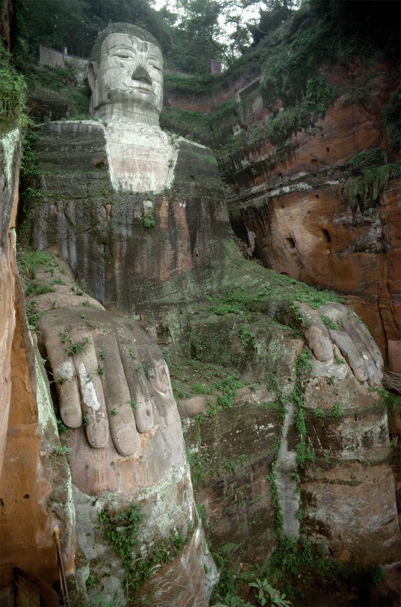

|  713-803. Great Buddha of Leshan. monumental sculpture. http://library.artstor.org/asset/LESSING_ART_10312643896. |
Stone Monumental Sculpture 713-803 Leshan, Sichuan, China 71 m |
This Buddha, titled the “Great Buddha of Leshan” is found in in Leshan, a city located in Sichuan, China. Considered a monumental sculpture and measuring a mighty 71 meters tall, the Buddha is carved into the rock. The proportions of the Buddha are a bit odd as his extremities seem extremely long compared to his relatively stout torso. His hands come down onto his legs, which droop off the end of the “seat” carved for him. The Buddha’s upper chest and his head are a lighter, white color. The coloring and the texture of the stone is quite interesting. The head and upper chest are made of a white, smoother material. Additionally, the rest of the rock the Buddha is made of is quite mossy and has a darker, more natural looking color. The difference in color might be from paint, since the monument has been restored throughout the years. A more recent picture shows fading paint. It’s not clear if the original paint is from a restoration or it is truly original. |
|---|
{kind=link}